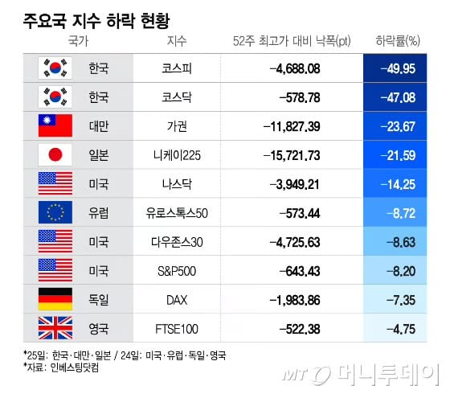
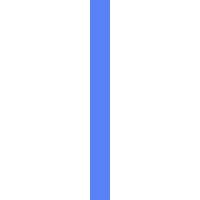

주요 국가 증시 하락률 근황.jpg
댓글
그래서 지수가 1년에 250퍼 오른나라가 어딨음ㅋ
조?금?
폭등할때 나보고 니는 왜 주식안하냐고 하더니 지금 죽겠다 하는거 보면 뭔가 꼬심
니는 왜 주식 안했냐 나만 당할 수 없으니 죽이겠다
저때 주식 오른다고 대부분 할매 할배 이웃집 아재 까지 조인 했는데 다 물려서 돈 못 뺌
오를때도 내릴때도 화끈하네예
미국장 상승까지 다 맞추고 환율 홀짝 실패 못한 저에오
난 미장만 했는데도 .... 환차익 때문에 슬프다 ㅠㅠㅠ

서로 주식하라고 등떠밀다보니...
내 슨피 환헷지도 아니라 몇년 적립투자해서 얻은 수익 다 날아갔어 ㅠㅠ
하이닉스 200찍었을때 이것도 존나 비싸네 하면서 숏들어갔다가 바로 300찍어버려서 진짜 코스피 10000가나??? 하고 있었는데..
한없이 올라갈때도 무서웠지만 이정도로 내리꽂는 것도 참 무섭다
진짜 ㅈ같은게 미장 꼬라박으면 국장도 빠지니까
이렇게 떨어져도 더 살 수가 없음
코스피는 오른적이라도 있지 코스닥은 오른적도 없는데 왜 쳐박음?
삼성 20층에 사람있어요 이 개새끼들아!!!!!! 살려줘
20층은 아직 곡소리 내면 안 됨
샌디스크는 더하지 않냐? 시발
그건 개별종목이고
저건 지수고
웃긴건 코스닥은 오르지도 않았었음 ㅋㅋㅋ
진짜는 코스닥임 미친놈들이 모인 심연임
진짜 병신 국장이네
주요국이 점진적 우상향할 때
박스피였던건 기억 못하지?
걍 병신장이 맞음